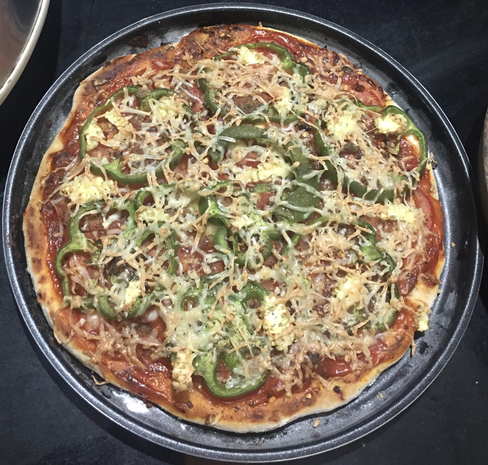
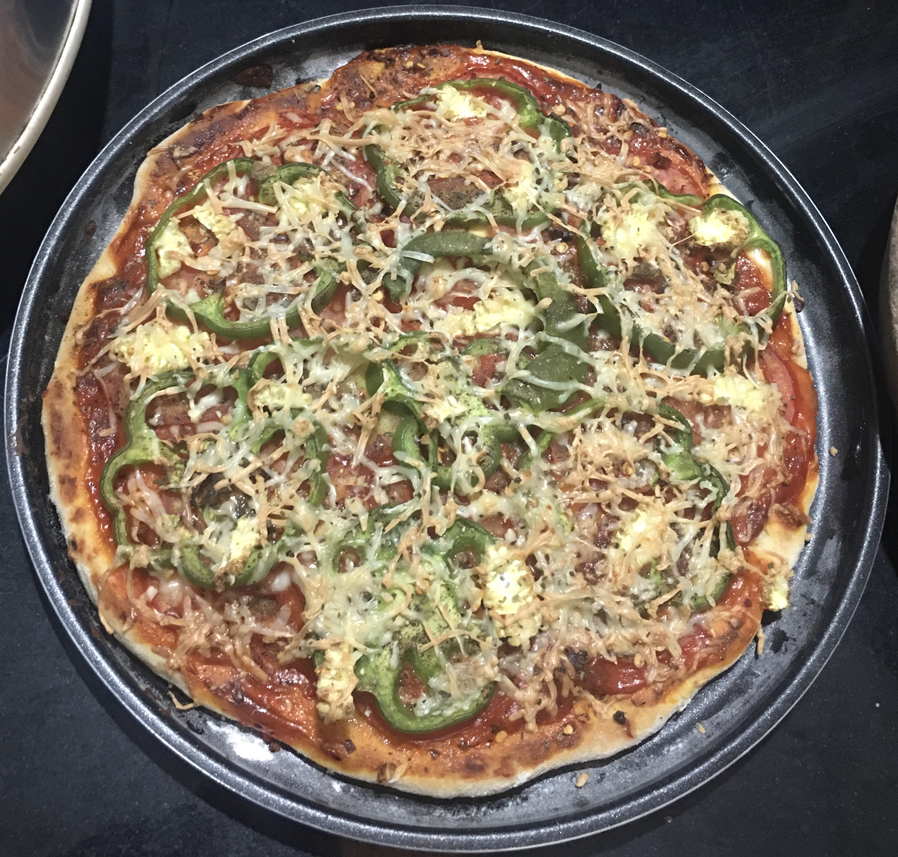
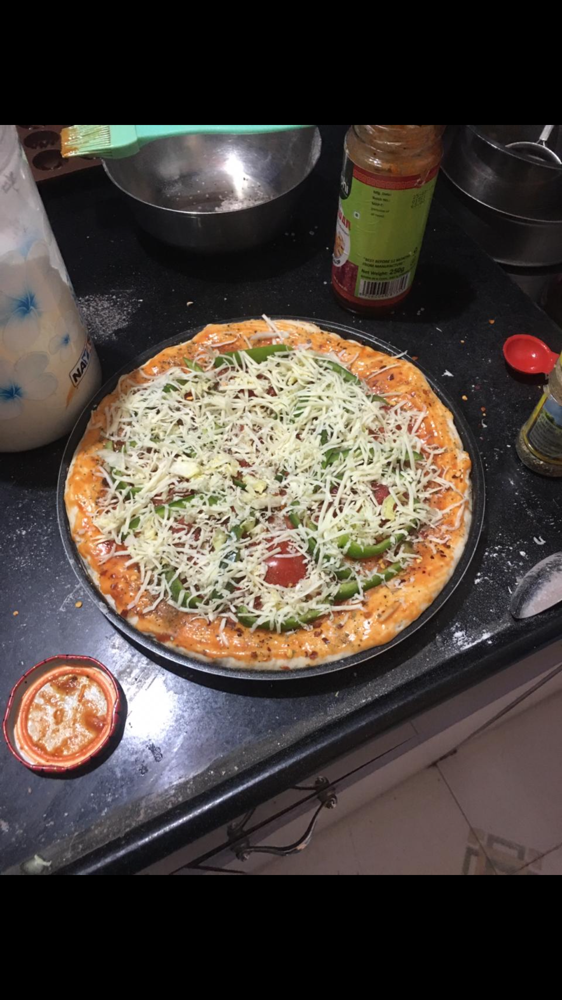
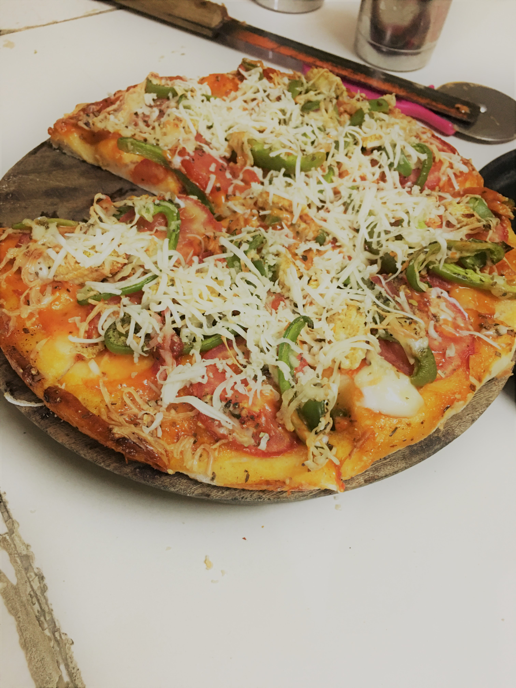

PIZZA WITH HOMEMADE PIZZA BASE
The process of making pizza base at home is very simple & it's taste will be same as DOMINOES
and PIZZA HUT's pizzas. So let's begin!
 

- Preparation time=60 minutes
- Baking time=25 minutes
INGREDIENTS FOR PIZZA BASE-
-> All purpose flour - 250gms
-> Dry yeast - 10gms
-> Sugar - 10gms
-> Salt - 5gms
-> Water - 180ml
-> Oil, butter or ghee - 10gms
METHODS/STEPS-
- Mix Water,Yeast,Sugar In A Bowl And Cover It With A Lid, Keep Aside For 10 mins.(Till yeast is totally ready you can see the bubbles)
- Mix flour and salt, knead a soft dough with the help of electric beater and if you dont have that you can mix it with wisk or fork.
Mix it for around 14-15 minutes.
- Mix oil, butter or ghee and again knead a little for about 8-10 minutes.
- After kneading it transfer the dough into a bowl and apply some oil or butter on the surface of it and cover it with a lid.
Keep it for around 40-45 minutes till it becomes double the size of original dough.
- Now pre-heat your oven at 200 degree celsius for 10 minutes.
- Now divide the dough into 2 portion, take one portion and put it in pizza tray and with the help of some flour spread the dough in the tray with hand.
- Now apply your pizza sauce of your choice(Schezwan sauce,Mayonnaise,Ketchup,Chilli sauce(optional))
- Put vegetables of our choice(Tomato,Corn,Bell pepper,Olives and many more).
- Now sprinkle herbs(oregano,red chilli flakes,pizza seasoning).
- Now put cheese (you can use any cheese you want).
For Homemade Cheese Recipe click here!

- Now put tray in oven and bake at 180 degree celsius for 20-22 minutes.

And the pizza is ready! Now it's time for you to go for it.
For more recipes, stay connected!